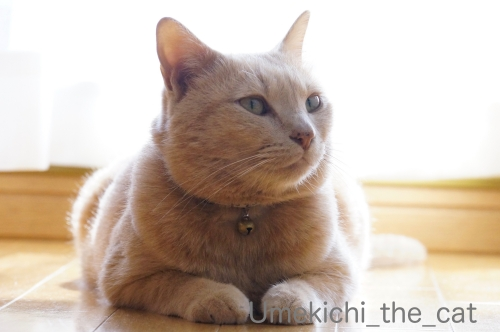
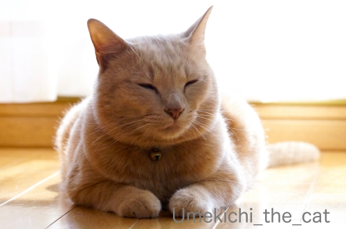
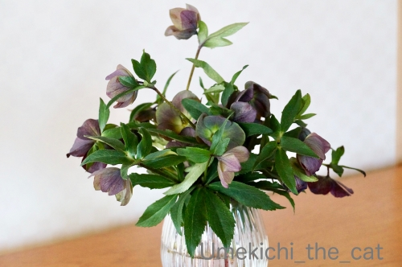
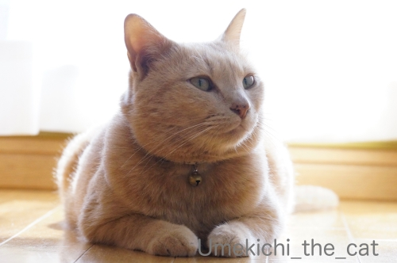
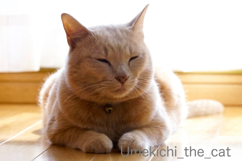
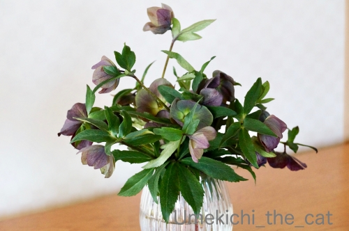

待てる漢、梅吉 [梅吉]
私のiPhoneは64G。
最近アプリのアップデートが出来ないことが多くて？？？だったのですが
ストレージを確かめると62Gまで使用中(ｰ ｰ;)
これじゃあアップデートもできないですよね。
で、容量を占めている梅吉動画をMacに移してiPhoneから削除し始めたのですが
（飼い主的に）お宝画像が続々出てくるのです！！
（11秒 音は出ません）
2015年8月の梅吉のエアちゅーちゅー( ´艸｀)
我が家に来てひと月くらいの頃（推定月齢四ヶ月）でまだお母さん猫が恋しかったのかな。
笑っちゃうけどちょっとホロリとさせられる動画でもあります。
（14秒 音は出ません）
2015年11月撮影。
ちょっと前ハンドスピナーって流行りましたよね。
あれを作った人はもしかしたら梅吉のこの動画からヒントを得た、とか！？ (≧▽≦)
ハンドスピナーの実物は東急ハンズで並んでいるのをちらっと見たことがあるだけ。
実はあれがどういうものなのかよくわかってませんけどw
そんな梅吉さんも4月22日に５歳になりました＾＾
保護猫なので誕生日はあくまで推定。
にゃんにゃんが良いかなと22日に決めました。
幼い頃はやんちゃすぎて目が離せない暴れん坊でしたが
今ではすっかりお・と・なの漢です( ´艸｀)

梅吉の視線の先におっとがいます。
どんなにベランダに行きたくてもお仕事中のおとーさんの休憩時間までちゃんと待てますよ＾＾

（白飛び過ぎー＞＜今回の記事の写真はめずらしく私の撮影w）
![[猫]](https://blog.ss-blog.jp/_images_e/101.gif) じゅうじって そろそろやろか
じゅうじって そろそろやろか
（おっとのプチ休憩時間は10時。）

大人しくしてますけど無言の圧力がすごいです。

黙して待ちます。
わーわー鳴かれるよりもある意味辛い(⌒-⌒;
幼い頃の梅吉の暴れっぷりからはこんなに落ち着いた（梅吉比）
聞き分けのある子になるとは正直思ってませんでした。
今、子猫に手を焼いている方いらっしゃるかしら。
梅吉だってこんなに落ち着いたのですから心配なさらなくても大丈夫ですよ(^_－)☆
iPhoneのストレージも大変なことになってましたが
今このブログの画像の使用領域も1GBいっぱいになりつつあります。
「その２」として新しいブログに引き継いでいらっしゃる方も多いですよね。
いずれはその方法を取らなければいけないかなと思いますがそれはもう少し先にしたい。
古い記事の画像を小さくして空き容量を増やす作業をちまちまと進めているのですが・・・
これが結構な時間がかかって大変＞＜
そのためこの先数日の間皆様へのご訪問が遅れることが多くなるかも。
お許しくださいませm(_ _)m

今回のお家の中のお花はベランダで咲いた鉢植えのクリスマスローズを切り花にしました＾＾
 ↑ガブッと一押し↑
↑ガブッと一押し↑
最近アプリのアップデートが出来ないことが多くて？？？だったのですが
ストレージを確かめると62Gまで使用中(ｰ ｰ;)
これじゃあアップデートもできないですよね。
で、容量を占めている梅吉動画をMacに移してiPhoneから削除し始めたのですが
（飼い主的に）お宝画像が続々出てくるのです！！
（11秒 音は出ません）
2015年8月の梅吉のエアちゅーちゅー( ´艸｀)
我が家に来てひと月くらいの頃（推定月齢四ヶ月）でまだお母さん猫が恋しかったのかな。
笑っちゃうけどちょっとホロリとさせられる動画でもあります。
（14秒 音は出ません）
2015年11月撮影。
ちょっと前ハンドスピナーって流行りましたよね。
あれを作った人はもしかしたら梅吉のこの動画からヒントを得た、とか！？ (≧▽≦)
ハンドスピナーの実物は東急ハンズで並んでいるのをちらっと見たことがあるだけ。
実はあれがどういうものなのかよくわかってませんけどw
そんな梅吉さんも4月22日に５歳になりました＾＾
保護猫なので誕生日はあくまで推定。
にゃんにゃんが良いかなと22日に決めました。
幼い頃はやんちゃすぎて目が離せない暴れん坊でしたが
今ではすっかりお・と・なの漢です( ´艸｀)
梅吉の視線の先におっとがいます。
どんなにベランダに行きたくてもお仕事中のおとーさんの休憩時間までちゃんと待てますよ＾＾
（白飛び過ぎー＞＜今回の記事の写真はめずらしく私の撮影w）
（おっとのプチ休憩時間は10時。）

大人しくしてますけど無言の圧力がすごいです。

黙して待ちます。
わーわー鳴かれるよりもある意味辛い(⌒-⌒;
幼い頃の梅吉の暴れっぷりからはこんなに落ち着いた（梅吉比）
聞き分けのある子になるとは正直思ってませんでした。
今、子猫に手を焼いている方いらっしゃるかしら。
梅吉だってこんなに落ち着いたのですから心配なさらなくても大丈夫ですよ(^_－)☆
iPhoneのストレージも大変なことになってましたが
今このブログの画像の使用領域も1GBいっぱいになりつつあります。
「その２」として新しいブログに引き継いでいらっしゃる方も多いですよね。
いずれはその方法を取らなければいけないかなと思いますがそれはもう少し先にしたい。
古い記事の画像を小さくして空き容量を増やす作業をちまちまと進めているのですが・・・
これが結構な時間がかかって大変＞＜
そのためこの先数日の間皆様へのご訪問が遅れることが多くなるかも。
お許しくださいませm(_ _)m

今回のお家の中のお花はベランダで咲いた鉢植えのクリスマスローズを切り花にしました＾＾

カフェオレ色の梅吉

梅吉 2023年8月10日 永眠


梅吉と出会った譲渡会

犬猫の理由なき殺処分ゼロ
妄想広告
UMEKICHI 光

爆発的に早い！
時々攻撃的！
Thanks to Mr.Boss365
爆発的に早い！
時々攻撃的！
Thanks to Mr.Boss365

エアちゅーちゅーの笑っているような目から、
スマホくるくるのハンドスピナーまで萌えが止まりません(≧◇≦)
そして５歳を迎えて石原裕次郎を彷彿させる漢の風格！
指示はオレが出すからお前ら動けって感じですかね(笑)
「その２」になっても変わず応援しますよ～＼(^o^)／
by yamatonosuke (2020-04-30 01:28)
エアちゅーちゅー可愛いですね。愛しくなって抱きしめちゃいそう。
梅吉さん5歳のお誕生日おめでとうね! これからも元気に笑わせてね~。
by zombiekong (2020-04-30 02:20)
休憩時間を待つ姿が健気！
仕事を放り出して構いに行きたくなっちゃいそう～
クリスマスローズ、いい色ですね～
by liang (2020-04-30 06:24)
写真を整理してるとお宝が出てきますね。
めったに写真を撮らないケータイの中から
長男君の画像が出て来たときは一緒に涙が・・・＾＾；
by ぽちの輔 (2020-04-30 06:28)
ハンドスピナーの何が面白いのか良くワカラン（ﾟ□ﾟ）
梅吉さん５歳の誕生日おめでとう。
by 英ちゃん (2020-04-30 08:09)
お宝画像、動画がたくさん♪
見入ってしまって大変ですね(#^.^#)
こんなに可愛い梅吉さんが
たくさんなんですもの♪
梅吉さん！５歳を迎えられたのですね！
おめでとぉ～ございます！
漢、梅吉さん！
これからも楽しく、元気に過ごしてください！
by きぃ (2020-04-30 08:16)
エアちゅーちゅー、ちゅーちゅーというより、震えているように見えてしまいました(^^;)
ハンドスピナーがスゴイ！上手ですねぇ。
梅吉さん、そんなに落ち着いたんですねぇ。ちぃさん、おっとさんの育て方もよかったんじゃないかしら。
昨日は情報ありがとうございます。既にキャンセル済のため、問い合わせという形をとりました。
by ChatBleu (2020-04-30 08:25)
梅吉さん、上手にハンドスピナーしてますねぇ( ^ω^ )
ニャンコって意外なことがとても器用ですよねぇ＾＾
無言の圧力・・・鳴いて催促してくれる方がマシですよね(⌒-⌒; )
ゴッドマザーは「ダメ！」の一言で圧力をはねのけますがw
５歳のお誕生日おめでとうございます*\(^o^)/*
これからもお父さんやお母さんと一緒に
元気で楽しく過ごしてね=(^.^)=
by ニッキー (2020-04-30 08:27)
お誕生日おめでとう。
じっとお仕事休憩を待つ梅吉さんのラストの
細目がかわいい。
動画や写真の保存もほっておくとあとから
大変ですよね。
今はクラウドという手もあるけれど、
やはりもしものことを考えると手元にも。
そしてバックアップも。
便利は不便だ…
by ふにゃいの (2020-04-30 09:19)
梅吉さん5歳のお誕生日お目出度うです！
iPhoneの写真は先日3万枚をPC夕方にバックアップして初期化しました(^^)
by ma2ma2 (2020-04-30 09:24)
エアチューチュー、そうか〜。その年頃のエアチューチューは
ほろりとするよね。おかあさんが恋しいよねって思っちゃう！
わたしのiPhoneはどのくらいだっけ？って思って調べたら64Gだった^^
同じだね。使用容量は34.12GBだからまだ大丈夫だ！^^
梅吉くんの待ってる姿がいじらしいわ〜〜
ちらりとカメラを意識してる顔もめっちゃ可愛い^^
5歳おめでとう♪♪
まだまだこれから男盛りになるかな？？^^
ブログはメインのURLを変更したくないので同じブログで頑張ってるよー♪
画像は違う場所に置いてるけどね^^
SSブログ譲渡でどうなるのか、注視です。
by リュカ (2020-04-30 09:49)
こんにちは。
「エアちゅーちゅー」素晴らしい（爆）お宝動画の発見です。
梅吉君、一瞬？ケイレンかと心配になりました。
「ハンドスピナー」は楽しそう。手の開き具合が可愛いですね。
「実はあれがどういうもの・・・」小生も同じくです（爆）
推定誕生日、梅吉君おめでとうございます。まだまだ５歳！！若いですね。
「無言の圧力」も礼儀正しい良い子に育ちました。
愛情に包まれ、素晴らしい育て方をされたと感じます。
偉いぞー！！ちぃさん&ご主人ですね。
ブログの整理整頓！！
「古い記事の画像を小さく・・・」大変そうですが、踏ん張って下さい。
梅吉君のお宝動画を楽しみにしています！？(=^･ｪ･^=)
by Boss365 (2020-04-30 11:41)
こんにちは！
映像は容量が大きいので油断すると領域不足に
なってしまいますね！
by Take-Zee (2020-04-30 11:42)
梅吉さん、5歳のお誕生日おめでとう＼(^o^)／
まだまだ落ち着くのは早いで～もっともっとおとーさん、おかーさんのお手伝いに励まなあかんで～^^
おとーさんのお仕事待ち。時間厳守のタイムキーパーがいればテレワークも安心ですね！
街ながらチロッとこっちを見てるお写真のお顔が大好きです。
エアちゅーちゅー♪
ウチのがこれやったら、夢の中でまた何か食ってると思っちゃうかも^^;
ハンドスピナーってありましたね！
ある日相方が嬉しそうに持って帰って来たんですが、私もこてつも「・・・で、何？」(≧▽≦)
今どこにあるんだろう・・・。
by ゆきち (2020-04-30 12:20)
お誕生日おめでとうございます！
実は私「きゃらめる企画」立ち上げの税務署への届け日は
令和2年2月22日にしました。
にゃんにゃんにゃんは意識したわけではないけど、
どうせなら、ゾロ目の方が覚えやすいかなと思った次第。
iPhone、動画はどうしても容量くいますよね。。。
で、整理しはじめるとお宝映像がでてくるのですね(^_^;)
次のお宝映像も期待したいと思います！
by よーちゃん (2020-04-30 14:36)
エアちゅーちゅーは下あごが微かに震えているような感じで
なんとも可愛い♪
まだ母の温もりに触れたい頃かもですしね。
これはおかーさん心をホロリとさせてしまいますね。
ハンドスピナー、私も実のところ何に役立つものか知らないまま流行が去りました。リラックス効果？集中力？よくわからないです。
梅吉さん上手に回してますね(^^
ブログの空き容量、私も残りわずかとなってどうしようか悩みましたが
月額308円だったかな？こんてんつ会員になる事で今使用中の状態で使用可能容量が一気に増えました。
part2としてあらたにアカウントを取得するのも何となく面倒だったので手間いらずで良いかも。
by marimo (2020-04-30 15:15)
エアちゅーちゅーを何度も観てると何かを悟っているような感じに・・・。
可愛いですよね(^_^)
スマホの容量はすぐに一杯になってしまうので適度にパソコンへデータを移してます。購入してもう4年になり買い換え時なのですが、特に不自由していないのでそのまま使い続けてます。
ブログも現在はその2ですが容量が一杯になりつつあるのでその3にする予定ですが、同じく画像を小さくしたり消したりとチマチマ作業してます。
by kou (2020-04-30 17:40)
ハンドスピナーの方
スマホのインカメラ回しとけば面白いの撮れそうですよ
やってみて下さい
by (。・_・。)２ｋ (2020-04-30 18:18)
いつもご訪問＆コメントありがとうございます(^^♪
はっぴーばーすでー
つー
梅吉ちゃーん
おめでとうございますにゃっ
梅吉ちゃん爆睡ですね(*^-^*)
ディスク容量たりないとｐｃ等
動きが悪くなるんですよねー
消すデータもなくてこまっちゃうんですよね。
しかしおかげでお宝映像が見つかるなんて
ついてますねー
うちのｐｃも既におかしくなりつつありますが
買いに行くこともできない( ；∀；)しくしく
by ぱだおくん (2020-04-30 18:34)
梅吉さん、お誕生日おめでとうございます！
エアちゅーちゅー、なんといっても表情が可愛いですね♪
ハンドスピナー、2kさんの案に賛成です。^^)
ブログ、「その２」を立ち上げても多分管理しきれないと思いずっと「その１」のままで、アクセス数の少なかった古い記事を削除して容量確保しましたが、今から思うとちょっと削除は惜しかったかな？と思う記事もあったので、今回復活させて見ました。^^;
by yes_hama (2020-04-30 21:44)
梅吉さん、エアチューチュー愛らしい～！
ハンドスピナー上手ですね^^
で、ハンドスピナーって何？^^;
お誕生日おめでとうございます。
5歳！ 若いなあ～ますます、いい漢になっていきますね^^
by sana (2020-04-30 23:25)
お誕生日おめでとう(*´ω｀)推定誕生日を決めるのも
野良猫を引き取る楽しみですよね。民生と浩人は末尾
が0か5のキリが良い日にちに決めたけど、まぐろだけ
「9月6日＝クロの日」にしたのがお気に入り( *´艸｀)
いつかはおとなしくて良い子になるってわかっていても
暴れん坊真っ最中は育児に悩む日々です。おとなしくな
るのか、アイツ（正也）も・・・。
by mio (2020-04-30 23:37)
梅吉さん、お誕生日おめでとうございます^^
by ニコニコファイト (2020-05-01 07:24)
梅吉さん、Happy Happy Birthday !!!
ﾜｰｲヽ(ﾟ∀ﾟ)ﾒ(ﾟ∀ﾟ)ﾉﾜｰｲ
by yuppie (2020-05-01 14:57)
梅吉さんの５歳のお誕生日、おめでとうございます。
エアちゅーちゅーの梅吉さんの表情がなんて愛らしいんでしょ。
おしゃぶり、くわえさせてあげたくなりますね＾＾。ほんと、貴重な映像。
おとなしく菩薩のような目でじっと待つ姿も、こんなの見たら余計に、
早く仕事切り上げなきゃ、って焦るな＾＾；。 健気だ。
ブログ、今のが2ですが3を作りたくないので、画像ファイル保存専用の非公開ブログを作って、そこのをコピペして使ってます。
by Inatimy (2020-05-01 17:48)
梅吉君、お誕生日おめでとう～
はい、おてんばな子猫に手を焼いております
何故か廊下に出てくると家族中の足を蹴り蹴りガジガジ
お気に入りのおもちゃを咥えると部屋中を駆け回って
途中にいる僕も旦那さんも踏んずけられてます
本当にそのうち落ち着くのか怪しいねって話してます（笑）
by 藤並 香衣 (2020-05-01 23:51)
エアちゅーちゅーは、可愛いですねぇ(^.^)
ずっっっと昔、乳飲み子の面倒を見ていて、
口から哺乳瓶を離すと、こんな感じだったわ♡
梅吉さんも、もう5歳!!! お誕生日おめでとさん♪
by のらん (2020-05-02 11:34)
梅吉さん！！待ってますね~(^^)
家の子も一番先に起きる人を遠くで監視してます(/ω＼)
by 50oyaji (2020-05-02 21:44)
梅吉さん お誕生日おめでとう！
えあちゅーの口元がかわいかったです。
by サンダーソニア (2020-05-03 14:34)
梅吉さん、お誕生日おめでとうございます！
エアちゅーちゅー、可愛いわ♪
なんか梅吉さんって、くーちゃんと顔つき色合いが似てるせいか、
すごく親しみ持っちゃうんですよね。梅吉さんみたいに、聞き分けの
いい大人にゃんになってくれたらいいな〜(☆︎ФωФ)ﾉﾆｬｰﾝ♪︎
by nachic (2020-05-03 19:16)